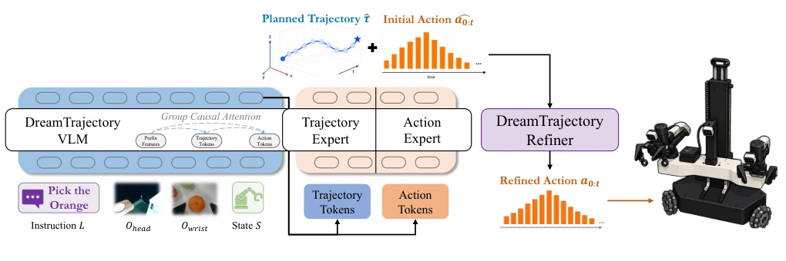
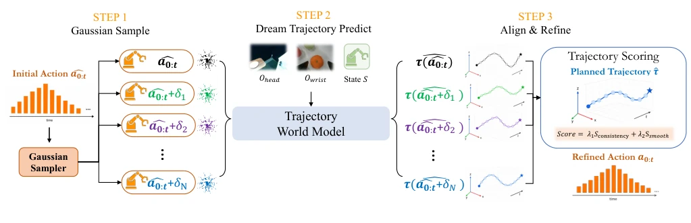
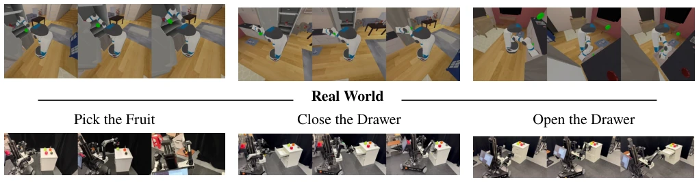

Mobile manipulation is the "deep water zone" of embodied intelligence; existing VLA models often walk blindfolded, directly outputting actions without considering whether the body can coordinate properly. DreamTrajectory attempts to draw a "trajectory map" for the robot, first deciding where the gripper goes, then deciding how limbs move. This approach is very sound, after all, task space is much easier to plan than action space. The most clever part is the test-time fine-tuning mechanism, which can correct actions to match expectations without retraining, counting as an engineering cleverness of the "hindsight" type. However, it essentially still relies on the π0.5 base; if the base model itself lacks sufficient physical understanding, relying solely on trajectory guidance might only be "precisely executing on the wrong path". Additionally, sampling 30 candidate actions during testing adds only 11ms latency, but it remains worthy of vigilance under high-frequency control. Overall, this is a pragmatic attempt to find a balance between "planning" and "execution", but there is still a distance from true general mobile manipulation, especially when facing unknown dynamics.
研究动机Motivation
移动操作要求机器人在动态视角和接触条件下协调底盘与机械臂，其有效动作空间远大于固定基座操作。现有 Vision-Language-Action (VLA) 策略存在两大硬伤：一是直接将观测映射为全身动作块，缺乏显式的任务空间运动规划，导致底盘与手臂的协同预测不精确 (Kim et al. 2024; Black et al. 2024)；二是开环执行预测的动作块，无法验证动作是否真能实现预期运动，控制误差和未建模接触会累积成计划与执行的差距。这导致在接触丰富的任务（如开冰箱、拉抽屉）中，策略表现急剧下降。DreamTrajectory 旨在通过引入显式末端执行器轨迹作为中间表示，解决协同控制不精确和执行偏差问题。
Mobile manipulation requires robots to coordinate the base and manipulator under dynamic viewpoints and contact conditions, where its effective action space is far larger than fixed-base manipulation. Existing Vision-Language-Action (VLA) strategies have two major flaws: first, directly mapping observations to whole-body action blocks lacks explicit task space motion planning, leading to imprecise coordination prediction between base and arm (Kim et al. 2024; Black et al. 2024); second, executing predicted action blocks in an open-loop manner cannot verify if actions truly achieve expected motion; control errors and unmodeled contacts accumulate into the gap between plan and execution. This leads to a sharp decline in strategy performance in contact-rich tasks (such as opening refrigerators, pulling drawers). DreamTrajectory aims to solve the problems of imprecise coordinated control and execution deviation by introducing explicit end-effector trajectories as intermediate representations.
DreamTrajectory contains two core components: Trajectory-guided VLA and Trajectory World Model. The overall process is divided into two stages: training and testing. In the training stage, the VLA backbone network (based on π0.5) is fine-tuned, utilizing Flow Matching to simultaneously predict future end-effector trajectories τ and whole-body action blocks a. Both are jointly generated via a shared Transformer and group-causal attention mask (group-causal attention mask), ensuring trajectory flow guides action denoising, while action information does not leak back to trajectory generation, making the trajectory an explicit reference in task space. In the testing stage, a lightweight action-conditioned trajectory world model is introduced. This model predicts the actual trajectory induced by observations and candidate action blocks. The system executes a "Search-Predict-Score" process: sampling N candidate actions (N=30) around the initial action, predicting the trajectory induced by each candidate in parallel, and scoring based on consistency with the planned trajectory (Straj) and action smoothness (Ssmooth), selecting the optimal candidate for execution. The world model adopts a GRU architecture, adding only 49M parameters, can be deployed as a plugin without retraining the strategy, achieving alignment between planning and execution. Additionally, world model training used interaction data containing successful and failed trials to capture deviations caused by contact and control, rather than relying solely on nominal kinematics.

Figure 1: Overview of DreamTrajectory. A trajectory-guided VLA jointly predicts a planned end-effector trajectory and an initial whole-body action chunk. At test time, the DreamTrajectory Refiner refines the initial action chunk before execution based on the planned trajectory.

Figure 2: Test-time action refinement in DreamTrajectory. Candidate actions are sampled around the initial action, and the trajectory world model predicts their induced trajectories. The candidates are ranked according to planned–induced trajectory consistency and action smoothness, and the highest-scoring candidate is executed.
The paper was evaluated on the MS-HAB simulation benchmark (Fetch manipulator) and three real-world tasks (ARX LIFT). Compared to the π0.5 baseline, trajectory guidance improved the average success rate from 32.3% to 47.5%, test-time fine-tuning further reached 54.8%, with the most significant improvement in contact-rich tasks (such as opening refrigerators, closing drawers). In the real world, the average success rate increased from 63.3% to 90.0%. Ablation studies show that trajectory guidance mainly benefits tasks requiring precise whole-body contact coordination, while world model fine-tuning can correct residual errors of the initial strategy. Architecture comparison shows the GRU world model outperforms diffusion models and analytical kinematics in trajectory prediction accuracy. In terms of computational overhead, the complete framework adds only 11.75ms latency and 1.4% parameters, proving its efficiency.

Figure 3: Simulated and real-world mobile manipulation tasks. All tasks require coordinated base and arm motion.